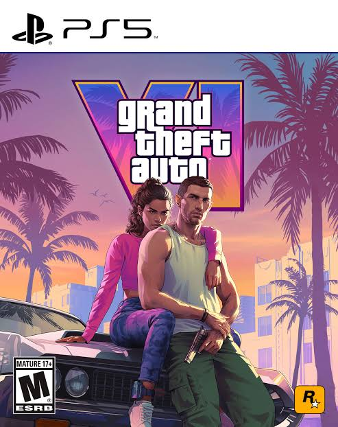
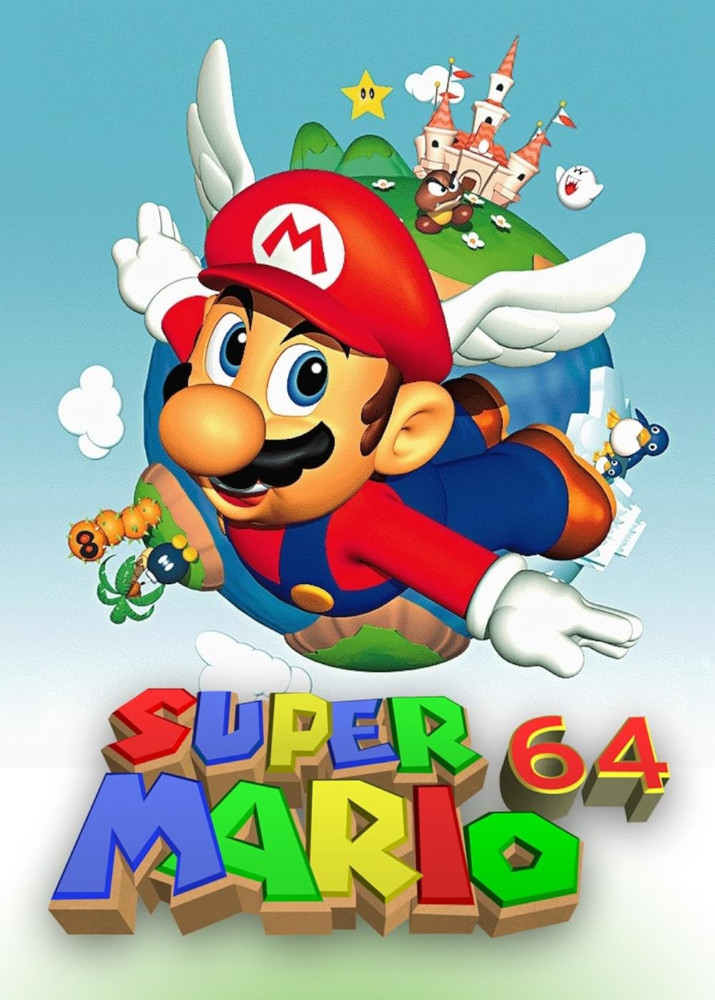
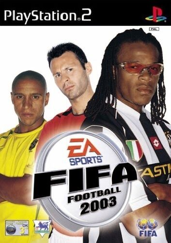

Reseña: GTA VI, el regreso más esperado
Publicado el 29 de octubre de 2025
Tras más de una década de espera, Rockstar Games finalmente ha presentado GTA VI. El juego nos transporta a una versión moderna de Vice City, con una historia profunda, personajes carismáticos y un mundo abierto que redefine el concepto de libertad en los videojuegos.
Su apartado técnico es impresionante, y las nuevas mecánicas de interacción hacen que cada partida sea diferente. Sin duda, uno de los títulos más ambiciosos de la generación.
Retro-análisis: Super Mario 64
El clásico que marcó un antes y un después. Super Mario 64 fue pionero en el salto a las 3D y sigue siendo una referencia en el diseño de niveles y la jugabilidad. Aunque los gráficos hayan envejecido, la diversión sigue intacta.
Curiosidades: El legado de FIFA 2003
FIFA 2003 introdujo por primera vez el sistema de “Team Chemistry” y una banda sonora inolvidable. Aunque hoy parezca un juego simple, fue clave para el crecimiento de la saga futbolística más popular del mundo.